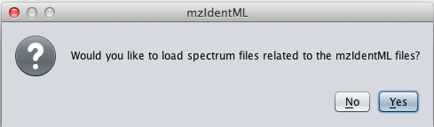

Opening Files in PRIDE Inspector
| Previous | Next | See Also |
This chapter explains how add spectra information to the mzIdentML fand mzTab files.
You can add this information in 2 different ways:
- When you open an identification file a dialog ask if you want to add the spectra information related with the results file :

If the user select click Yes, a new dialog allow to chose all the spectra files related with the identification results file (mzTab or mzIdentML):

One identification result file can be associated with one or more spectra files, for that reason the users is able to associate one or more spectra files to the identification results. The dialog shows the the files added, the size of each file and the user is able to remove one of then by clicking
- When the result file (mzIdentML or mzTab) is already opened then the user can also add the spectra information by clicking the icon
 . Then a new
dialog appear where the user can select the files realted with the identification result file:
. Then a new
dialog appear where the user can select the files realted with the identification result file:

 You can open multiple files at the same time (same or different format) by
clicking
Ctrl and selecting with the mouse the different files you want to inspect.
You can open multiple files at the same time (same or different format) by
clicking
Ctrl and selecting with the mouse the different files you want to inspect.